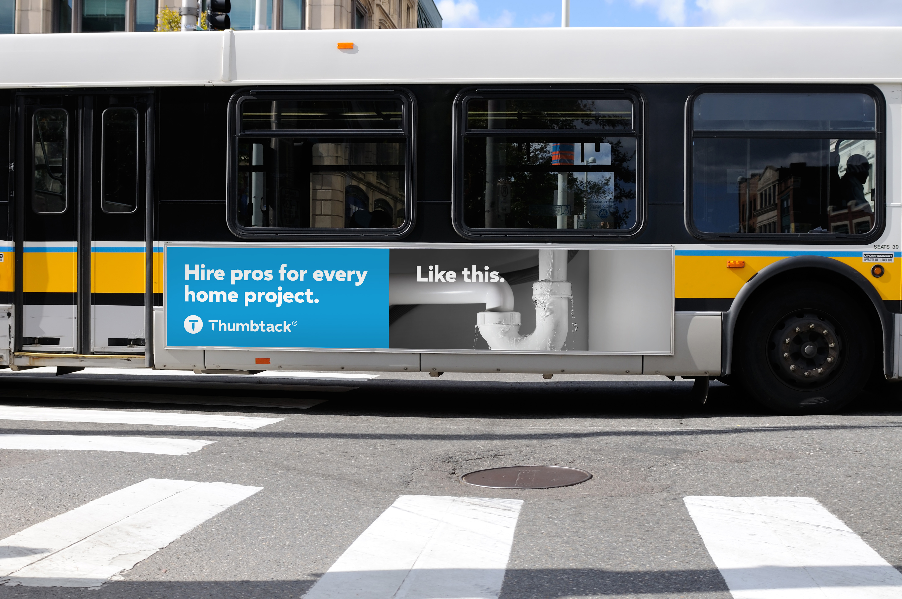

Soeun Yoon
Senior Brand Designer who shapes identity, campaigns, and everything the brand touches.
Thumbtack
Overview
As the senior brand designer on the in-house team, I owned end-to-end execution across TV, out-of-home, paid/organic social, and integrated marketing campaigns, working alongside the art director, integrated marketing managers, product team, and the O&O team to keep the brand consistent while driving measurable impact.
Across the work, I kept coming back to the same challenge: how do I elevate a home-service platform into a brand that feels human, warm, and trusting?
Standoff Campaign
The Standoff campaign came from a simple insight: everyone knows the feeling of being stuck on an unfinished home project. I oversaw visual direction across TV and social media, featuring 30-, 15-, and 6-second spots, and ensured the tone balanced relatability with cinematic craft.
Impact
2x lift
target audience awareness
50% improvement
TV ad performance
OOH
I led design for a localized out-of-home rollout across San Francisco and Seattle — 41 placements spanning print bulletins, digital panels, bus kings, and one-sheet posters. The work required thinking in different formats simultaneously: what holds up at 60mph on a billboard, what performs at eye level on a bus stop.
Impact
10–15% lift
incremental service requests
41 placements
SF and Seattle





Paid & Organic Social
I own the end-to-end social design process — from concept through production, including building platform-specific guidelines that keep assets consistent and optimized across channels. I've been leading exploration of AI tools within the team, including experimenting with Runway to discover where AI generation can accelerate production without compromising the brand's standards.
Impact
Millions of views
across social channels
iROAs above
baseline efficiency targets
Brand Expression
A key refinement in the brand refresh was moving from heavy, assertive type treatment to a softer visual tone while preserving clarity or hierarchy. I developed a system of style variations that maintained structural consistency while making the brand feel more approachable.